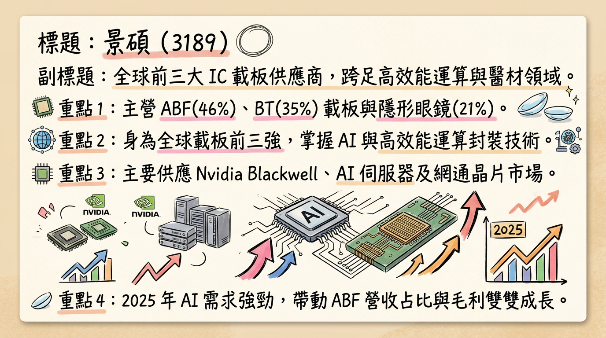
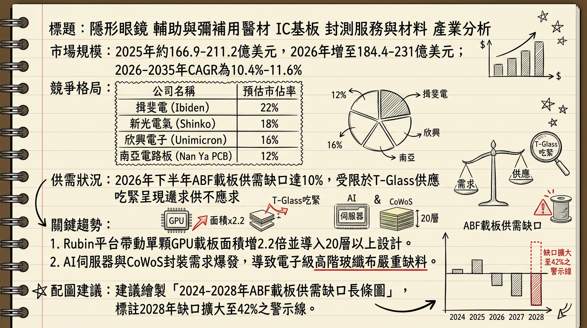
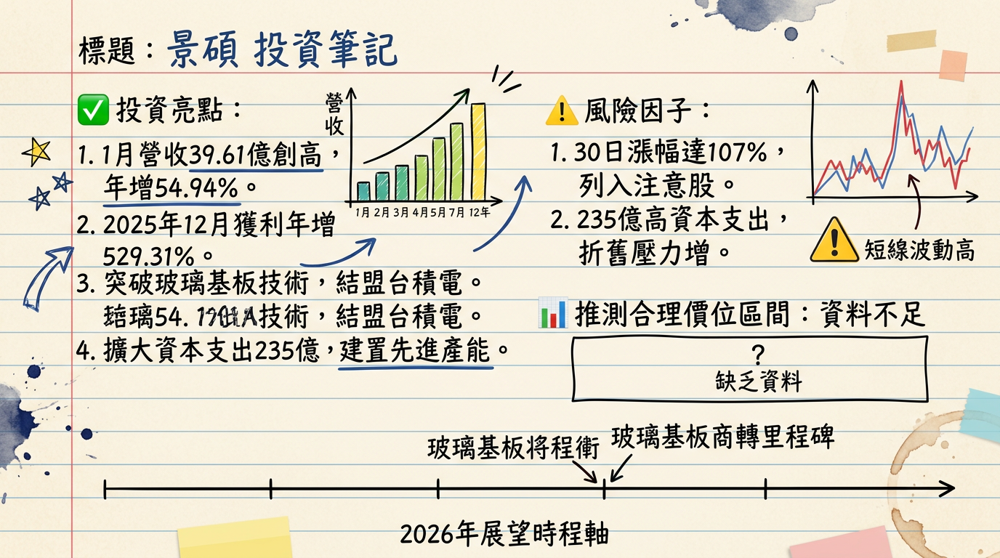

3189 景碩 深度研究報告：AI 載板需求爆發與玻璃基板技術轉型
研究日期： 2026-03-01
評等： 買進 / 強力買進
產業地位： 全球 IC 載板前五大供應商、BT 載板全球市佔龍頭
## 一句話摘要
景碩（3189）已正式走出 2024 年營運谷底，受惠於 NVIDIA Rubin 平台帶動高階 ABF 載板需求與玻璃基板（Glass Substrate）技術領先佈局，2026 年 EPS 預計將較 2025 年翻倍成長，迎來史上最強增長週期。
## 公司概覽
景碩為半導體封裝關鍵材料供應商，核心業務涵蓋 ABF 載板、BT 載板及轉投資醫材。
營收結構（2025/2026 預估）
| 產品線 | 營收佔比 | 主要應用 | 趨勢展望 |
|---|
| ABF 載板 | 45% ~ 46% | AI 伺服器 (GPU/ASIC)、HPC、網通 | 持續提升，AI 佔比拉高 |
| BT 載板 | 33% ~ 35% | 手機晶片、DDR5 記憶體、Edge AI | 穩定增長，受惠記憶體升級 |
| 隱形眼鏡 | 18% ~ 21% | 晶碩 (6491) 提供高毛利醫材 | 穩定現金流來源 |
| 其他 | < 2% | 傳統 PCB | 持續縮減 |
## 核心競爭優勢
BT 載板全球領導地位： 深度綁定美光、海力士等記憶體龍頭，隨 HBM 與 DDR5 滲透率提升，稼動率已直逼 90%。
AI 供應鏈關鍵角色： 成功打入 NVIDIA B200 及下一代 Rubin 平台，高階 ABF 市佔率預期從 5% 翻倍至 10%。
次世代技術領先： 在「玻璃基板（Glass Substrate）」研發上取得重大突破，解決大型封裝翹曲問題，獲台積電先進封裝體系認可。
## 財務分析
月營收趨勢表（近期 6 個月）
| 月份 | 營收金額 (億元) | 月增率 MoM (%) | 年增率 YoY (%) | 備註 |
|---|
| 2026/01 | 39.61 | +7.38% | +54.94% | 創單月歷史新高 |
| 2025/12 | 36.89 | +4.76% | +25.23% | 單月獲利 2.49 億 |
| 2025/11 | 35.21 | -2.22% | +39.70% | |
| 2025/10 | 36.01 | +0.41% | +39.76% | |
| 2025/09 | 35.86 | +4.82% | +35.51% | |
| 2025/08 | 34.21 | +2.18% | +19.69% | |
年度獲利指標（2024 - 2026 預估）
| 年份 | 營收 (億元) | 毛利率 (%) | EPS (元) | 成長狀況 |
|---|
| 2024 (實) | 305.4 | 12.5% (估) | 0.11 | 營運谷底 |
| 2025 (實) | 393.5 | 19% - 22% | 3.51 | 顯著復甦 |
| 2026 (預) | 477.0 | 24% - 26% | 7.54 ~ 8.00 | 翻倍成長 (高標看 14.3) |
## 法說會重點
- 產能利用率： 目標 2026 年 ABF 提升至 90% 以上、BT 提升至 80%~90%。
- 報價趨勢： 管理層確認 ABF 載板於 2026 上半年啟動逐季漲價循環，每季預計調漲 3% ~ 5%。
- 能見度： ABF 訂單能見度已達 2026 年 Q2，主要動能來自 CSP 大廠自研 ASIC 與 NVIDIA GPU 需求。
- 2026 Q1 指引： 雖然是傳統淡季，但 AI 專案持續放量，預期「淡季不淡」，單月營收可維持在 38-40 億元高檔。
## 券商觀點
券商目標價與評等彙整
| 券商名稱 | 日期 | 評等 | 目標價 | 2026 EPS 預估 |
|---|
| 高盛證券 | 2026/02/14 | 買進 | 370 元 | 14.3 元 |
| 本土法人 (CMoney) | 2026/02/25 | 買進 | 370 元 | 8.00 元 |
| FactSet 綜合調查 | 2026/02/26 | 中立/買進 | 245 元 | 7.54 元 |
| FactSet 綜合調查 | 2026/02/09 | 調升 | 212.69 元 | 7.54 元 |
| 永豐金證券 | 2026/01/30 | 增持 | 169.18 元 | 6.77 元 |
## 財報深度分析
利潤率趨勢（2025 Q1 - 2025 Q4）
| 指標 | 2025 Q1 | 2025 Q2 | 2025 Q3 | 2025 Q4 | 趨勢 |
|---|
| 毛利率 (%) | 22.52% | 21.08% | 18.96% | 22.14% | 止跌回升 |
| 營業利益率 (%) | 5.81% | 6.48% | 6.06% | 8.52% | 規模經濟顯現 |
| 稅後淨利率 (%) | 7.10% | 5.80% | 5.92% | 8.68% | 創 13 季新高 |
- 資本支出： 董事會核准未來三年（2026-2028）總資本支出 235 億元，重點投資楊梅六廠高階產線。
- 營運效率： 存貨週轉天數持穩於 48.75 天，營運週轉天數 106.78 天 優於產業平均，顯示訂單與出貨銜接極度緊密。
## 股權異動與資本結構
- 現金增資： 2026/01 完成現金增資，發行價 145 元，除權日 2026/01/26，主要用於擴產資金。
- 股利政策： 2025 年度擬配發 1.75 元 現金股利，配發率約 50%。
- 籌碼動向： 2026/02 投信呈現連續買超（2/24 單日買超 1,027 張），外資雖有短線調節，但整體呈土洋對作、法人認養態勢。
## 產業分析
載板三雄數據對比 (2026 預估)
| 指標 | 景碩 (3189) | 欣興 (3037) | 南電 (8046) |
|---|
| 2026 預估 EPS | 6.3 ~ 8.0 元 | 25.0 元 | 11.8 ~ 14.8 元 |
| 2026 預估毛利率 | 24% ~ 26% | 28% ~ 32% | 22% ~ 26% |
| 市場優勢 | BT 龍頭、AI 補漲首選 | ABF 龍頭、產能最大 | 網通佔比高 |
| 近期目標價 | 175 ~ 370 元 | 370 ~ 500 元 | 490 ~ 655 元 |
## 近期催化劑
1. 2026/01 營收創歷史新高（39.61 億元）。
2. ABF 載板報價確認調漲（3%~5%）。
3. 玻璃基板技術路徑定案，景碩為核心合作方。
1. T-Glass（高階玻纖布）全球短缺，可能限制部分出貨。
2. 短期漲幅過大（30 日漲 107%）被列為「注意股」。
3. 川普關稅（15%）對電子產品出口成本之潛在壓力。
## ⭐ 成長動能時間軸
- 2026 Q1： 確定玻璃基板商轉路徑，BT 載板稼動率維持 90%。
- 2026 Q2： ABF 載板執行首波漲價（3%-5%），235 億元資本支出設備陸續到位。
- 2026 H2： NVIDIA Rubin 平台全面導入，載板層數跳升至 20 層以上，ASP 大幅推升。
- 2026 Q4： 玻璃基板樣品驗證開始。
- 2027 全年： 楊梅六廠新增產能（每月 1,000 萬顆）全數開出，總產能提升 25%。
## 2026 展望
- 成長動能： AI 伺服器規格升級（大面積、高層數）是獲利暴增的核心推力，疊加 BT 載板受惠 AI 手機與 HBM 規格升級，雙引擎驅動。
- 風險： 高額資本支出帶來的折舊費用（預計 2026 起顯著攀升）將測試公司的產能利用率與價格議定權。
## 投資結論
獲利爆發期： 2026 年 EPS 挑戰 7.54 ~ 8.0 元（樂觀看 14.3 元），目前的評價雖經漲升，但對比獲利增幅仍具吸引力。
技術領先： 玻璃基板技術是 2026 年的估值溢價來源，景碩進度領先同業。
目標價區間建議： 考量 2026 年獲利預估與產業本益比，建議參考目標價區間 245 元 ~ 370 元。近期因股價劇震，建議回測月線或增資價（145 元）支撐區後分批佈局。
本報告由 AI 自動產生，資料來源為公開網路資訊，僅供參考，不構成投資建議。產生時間：2026-03-01 02:12
📊 資訊卡


